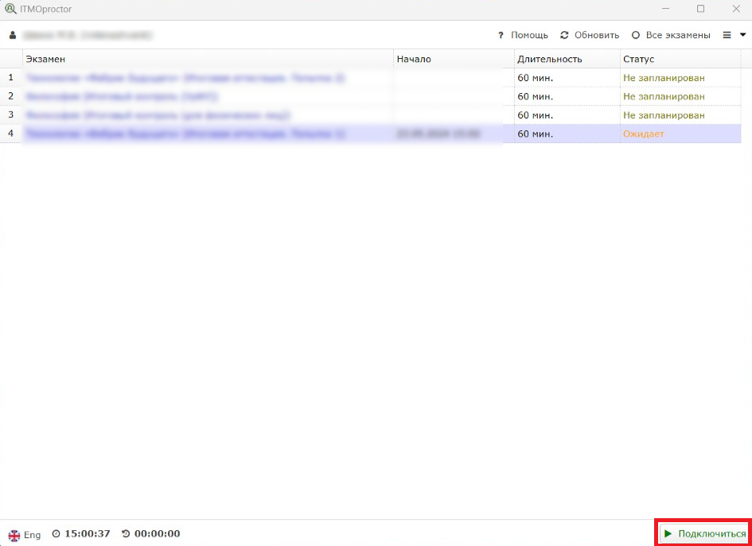

Руководство по тестированию в других вузах*
Установите приложение ITMOproctor на свой компьютер.
Войдите через аккаунт openedu.
Чтобы записаться на экзамен, нажмите на нужный курс. В правом нижнем углу нажмите на кнопку «Запланировать».
Выберите удобный день и время (указано местное время). После этого статус экзамена изменится на «Запланировано».
Перед экзаменом вы можете проверить работу камеры, микрофона и демонстрации экрана. Для этого перейдите во вкладку «Меню» и выберите пункт «Проверка связи».
Важно: если вы попытаетесь записаться на прокторинг в последние дни сдачи и свободных слотов не останется, тогда промежуточная аттестация считается несданной по вине студента и будет рассматриваться как неявка. Пропуск назначенного времени также считается неявкой.
Когда наступит время ближайшего экзамена, в правом нижнем углу появится кнопка «Подключиться», нажмите на неё.
В открывшемся окне вы увидите своё изображение, демонстрацию экрана и инструкции. Если всё в порядке, то отобразится статус «Соединение установлено». Если нет, проверьте настройки камеры и микрофона и нажмите на кнопку «Переподключиться».
Затем вам нужно будет перейти по ссылке и получить уникальный код.
Полученный код следует сравнить с кодом в приложении ITMOproctor.
После этого вам потребуется продемонстрировать рабочий стол без лишних предметов и окружающую обстановку, чтобы подтвердить отсутствие посторонних людей в комнате.
Сделайте фотографию, на которой ваше лицо хорошо освещено и полностью попадает в кадр.
Сделайте снимок документа (студенческий билет, паспорт).
Важно: окно системы прокторинга можно свернуть, но не закрывать.
После завершения экзамена зайдите в ITMOproctor и нажмите на кнопку «Завершить экзамен», если он не завершился автоматически.
После этого статус экзамена изменится на «Ожидает оценку». После проверки процесса сдачи экзамена (это может занять до 5 дней), статус изменится на «Принят» или «Прерван» в зависимости от того, были ли нарушения в ходе экзамена.
Ссылка на источники графических материалов.
Установите приложение examus на свой компьютер.
Войдите через аккаунт openedu.
Разрешите доступ к камере, микрофону и вашему экрану.
В списке ваших экзаменов выберите экзамен.
Затем откроется окно со слотами для записи на прокторинг. Подтвердите свой выбор, после чего слот станет оранжевым.

Важно: запись доступа не менее, чем за 48 часов до предполагаемого экзамена. В окне со слотами указано время в часовом поясе г. Москва (UTC+3)
Когда наступит время ближайшего экзамена, откройте examus и нажмите на кнопку «Начать».
Ознакомьтесь с порядком тестирования, требованиями к пользователю и оборудованию, подтвердите согласие с правилами и нажмите «Продолжить».
Пройдите проверку настроек компьютера и нажмите «Продолжить».
В новом окне ознакомьтесь с рекомендациями и выполните их. В выпадающем списке выберите Examus и нажмите «Продолжить».
Сделайте снимок документа и нажмите на кнопку «Отправить». Дождитесь указаний проктора.
Когда проктор разрешить вам начать появится кнопка «Начать тестирование».
После выполнения нажмите на «Завершить сдачу экзамена»
Важно: при возникновении проблем пишите в поддержку платформы «Открытое образование» по адресу student@openedu.ru или в техподдержку «Экзамус» по адресу support@examus.net.
Ссылка на источники графических материалов.